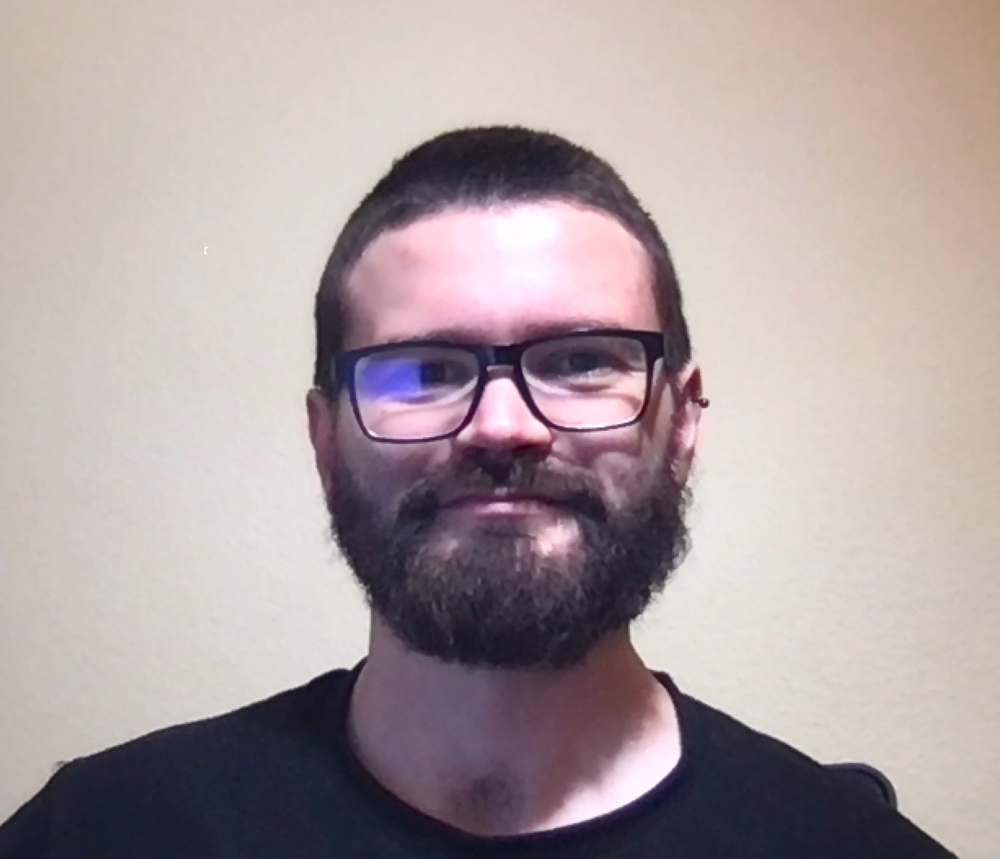

Euclydes Young
Software developer
Madrid, Spain
Portuguese, Spanish and English
euclydes.young@gmail.com
https://github.com/nettinho
https://www.linkedin.com/in/euclydes/
Timeline
-
Development of FastCapture, an Entity Extraction tool used with documents of many formats such as PDF or images. It was developed with Elixir and ReactJS.
-
Development of an internal file manager for an Insurance Client. Made with NodeJS and AngularJS.
-
Quality team of Business Inteligence processes in BBVA Latam. Validating standards of Informatica Powercenter ETL processes and mantaining the informational Teradata data model. Daily use of Bash and Perl scripting.
-
Quality team of Business Inteligence processes in BBVA Mexico. Validating standards of Informatica Powercenter ETL processes and mantaining the informational Teradata data model. Daily use of Bash and Perl scripting.
-
Preparation of corporative packages of Informatica Powercenter ETL proceses and Teradata Data Model to be used in other countries of the BBVA Group.
-
Jun 2011 - May 2012GTBCMadrid, SpainDevelopment and maintenance of Informatica Powercenter ETL processes for BBVA.
-
Feb 2011 - Jun 2011GTBCLisbon, PortugalDevelopment of various dashboards using Qlikview and Microsoft SQLServer.
-
Monitoring of midrange AS400 systems in IBM.
-
I studied for three years the degree of Computer Science and Engineering but I left it incomplete when I moved to Madrid.
-
I completed Phil Young's english course and got the TOEFL certification.